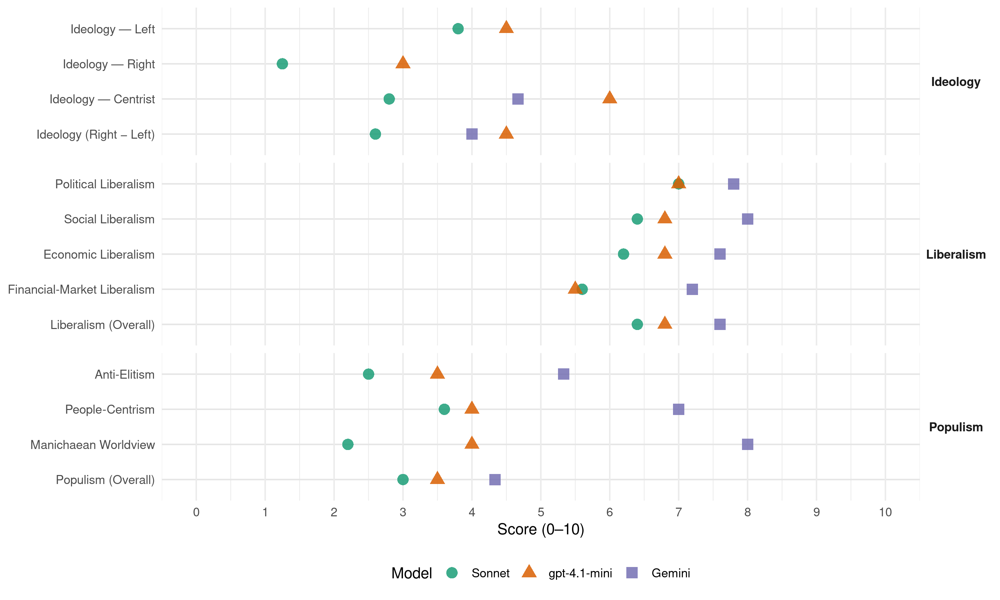

PLD (Dominican Republic, 2004)
manifesto_id 168331_200405
Get full text: This site shows derived annotations and short verbatim quotes only. The full manifesto text is © Manifesto Project / WZB — obtain it via manifesto-project.wzb.eu using the manifesto_id above.
Headline scores
| Dimension | Sonnet | gpt-4.1-mini | Gemini |
|---|---|---|---|
| Populism (Overall) | 3.0 | 3.5 | 4.3 |
| Anti-Elitism | 2.5 | 3.5 | 5.3 |
| People-Centrism | 3.6 | 4.0 | 7.0 |
| Manichaean Worldview | 2.2 | 4.0 | 8.0 |
| Ideology (Right − Left) | 2.6 | 4.5 | 4.0 |
| Liberalism (Overall) | 6.4 | 6.8 | 7.6 |
| Political Liberalism | 7.0 | 7.0 | 7.8 |
| Social Liberalism | 6.4 | 6.8 | 8.0 |
| Economic Liberalism | 6.2 | 6.8 | 7.6 |
| Financial-Market Liberalism | 5.6 | 5.5 | 7.2 |
Evidence per dimension
Economic Liberalism
Gemini · score 8.0 · verified · chunk 1
“modelo de economía social de mercado”
este Programa de Gobierno se sustenta en el modelo de economía social de mercado. Un nuevo Gobierno del PLD hará énfasis en
Gemini · score 8.0 · verified · chunk 2
“sana competencia y afectan negativamente”
sectores políticos que perjudican la sana competencia y afectan negativamente las recaudaciones fiscales del gobierno.
Gemini · score 8.0 · verified · chunk 3
“Promover el ejercicio de la libre competencia”
Objetivos Promover el ejercicio de la libre competencia mediante la aplicación de las políticas necesarias
Gemini · score 8.0 · verified · chunk 4
“Promover la participación del sector privado”
asistencia técnica, sobre todo a las áreas rurales — Promover la participación del sector privado, bajo diversas modalidades
Gemini · score 6.0 · verified · chunk 5
“propiciando la participación del sector privado”
coordinación con las instancias sociales y comunitarias propiciando la participación del sector privado para promover el mecenazgo y el patrocinio
gpt-4.1-mini · score 7.0 · verified · chunk 1
“modernización de la infraestructura, de la claridad y transparencia de las regulaciones”
Otro aspecto importante para la generación de empleos será la consolidación de un ambiente favorable al desarrollo empresarial. Ese ambiente será el resultado de la modernización de la infraestructura, de la claridad y transparencia de las regulaciones, de la seguridad jurídica…
gpt-4.1-mini · score 7.0 · verified · chunk 2
“Promoveremos y realizaremos las reformas económicas e institucionales que sean necesarias”
La política económica del Gobierno del Doctor Leonel Fernández y del Partido de la Liberación Dominicana se orientará a recuperar la estabilidad y el camino del crecimiento. Promoveremos y realizaremos las reformas económicas e institucionales que sean necesarias, que nos preparen para enfrentar los nuevos retos de una economía mundial más abierta y que nos permita no solo producir riquezas, sino también distribuirlas mejor.
gpt-4.1-mini · score 7.0 · verified · chunk 3
“promover la producción más eficiente en el sector forestal”
— Fortalecer los centros de investigación nacional en la generación de tecnologías locales para la producción más eficiente en el sector forestal. — Fortalecer el Instituto de Investigación Agropecuaria y Forestal.
gpt-4.1-mini · score 7.0 · verified · chunk 4
“Promover la expansión de micros y pequeñas empresas para mujeres”
…— Promover la expansión de micros y pequeñas empresas para mujeres, tanto en la zona rural como urbana. — Fomentar un mayor acceso de las mujeres a los centros de capacitación técnico-laboral con la intención de favorecer su inserción al mercado laboral. — Fomentar y promover en coordinación con los ayuntamientos…
gpt-4.1-mini · score 6.0 · verified · chunk 5
“propiciar la economía de recursos y reforzar el papel del Estado como facilitador y promotor de la cultura actuando en todo momento en coordinación con las instancias sociales y comunitarias propiciando la participación del sector privado”
__propiciar la economía de recursos y reforzar el papel del Estado como facilitador y promotor de la cultura actuando en todo momento en coordinación con las instancias sociales y comunitarias propiciando la participación del sector privado para promover el mecenazgo y el patrocinio de la Cultura.
Sonnet · score 6.0 · verified · chunk 1
“apertura de los mercados, reducción del papel del Estado”
los primeros se integraron a la economía global introduciendo las reformas estructurales inspiradas en dicho Consenso: apertura de los mercados, reducción del papel del Estado, desregulaciones, privatizaciones
Sonnet · score 7.0 · verified · chunk 2
“Fomentar prácticas competitivas con igualdad de oportunidades”
Fomentar prácticas competitivas con igualdad de oportunidades para todos. Facilitar desde el gobierno el apoyo necesario al sector privado para el acceso a tecnologías
Sonnet · score 6.0 · verified · chunk 3
“libre competencia mediante la aplicación de las políticas”
Promover el ejercicio de la libre competencia mediante la aplicación de las políticas necesarias para eliminar barreras que distorsionan el mercado
Sonnet · score 6.0 · verified · chunk 4
“Promover la participación del sector privado”
Promover la participación del sector privado, bajo diversas modalidades tanto en la construcción y operación de los sistemas
Sonnet · score 6.0 · verified · chunk 5
“participación del sector privado para promover”
propiciando la participación del sector privado para promover el mecenazgo y el patrocinio de la Cultura
Financial-Market Liberalism
Gemini · score 8.0 · verified · chunk 1
“transparencia que asegure la confianza necesaria en el sistema financiero”
existe una debilidad estructural en el sistema de supervisión y que no existe un nivel de transparencia que asegure la confianza necesaria en el sistema financiero. La crisis bancaria
Gemini · score 7.0 · verified · chunk 2
“fortalecimiento del sistema financiero”
adecuación de los agregados monetarios a la demanda real de la economía y del fortalecimiento del sistema financiero.
Gemini · score 7.0 · verified · chunk 3
“participación de la banca privada al financiamiento”
un fondo de garantía para promover la participación de la banca privada al financiamiento de la agropecuaria.
Gemini · score 7.0 · verified · chunk 4
“acceso de la mujer rural a la tierra y al crédito”
rurales,al campo productivo y promover políticas que incrementen el acceso de la mujer rural a la tierra y al crédito agrícola.
Gemini · score 7.0 · verified · chunk 5
“promover eficientemente el mercado de valores”
de los Fondos de Pensiones de los trabajadores. — Promover eficientemente el mercado de valores para definir los instrumentos financieros que garanticen
gpt-4.1-mini · score 5.0 · verified · chunk 1
“fortalecimiento de la capacidad técnica e institucional de los organismos reguladores”
La eliminación de posibilidades de nuevas crisis y fraudes bancarios requiere de un significativo fortalecimiento de la capacidad técnica e institucional de los organismos reguladores y supervisores del sistema.
gpt-4.1-mini · score 6.0 · verified · chunk 2
“Fortalecer la supervisión bancaria y crear un monitoreo preventivo para evitar eventuales crisis”
Fortalecer la supervisión bancaria y crear un monitoreo preventivo para evitar eventuales crisis en las entidades financieras. — Constituir un banco de desarrollo orientando el crédito hacia la pequeña y mediana empresa de todos los sectores de la actividad económica.
Sonnet · score 5.0 · verified · chunk 1
“fortalecimiento de la capacidad técnica e institucional”
La eliminación de posibilidades de nuevas crisis y fraudes bancarios requiere de un significativo fortalecimiento de la capacidad técnica e institucional de los organismos reguladores y supervisores del sistema.
Sonnet · score 7.0 · verified · chunk 2
“determinación de la tasa de cambio mediante mecanismos de mercado”
Propiciar un ambiente institucional y macroeconómico que contribuya a la determinación de la tasa de cambio mediante mecanismos de mercado competitivo, transparente y eficiente
Sonnet · score 5.0 · verified · chunk 3
“crédito agropecuario es insuficiente”
La oferta actual del mercado bancario no excede los RD$ 6 mil millones, lo que representa apenas el 20% en relación a la demanda; por lo que el crédito agropecuario es insuficiente
Sonnet · score 5.0 · verified · chunk 4
“acceso de la mujer rural a la tierra y al crédito agrícola”
promover políticas que incrementen el acceso de la mujer rural a la tierra y al crédito agrícola.
Sonnet · score 6.0 · verified · chunk 5
“mercado de valores para definir los instrumentos financieros”
Promover eficientemente el mercado de valores para definir los instrumentos financieros que garanticen la Inversión y Rentabilidad de los Fondos de Pensiones
Political Liberalism
Gemini · score 9.0 · verified · chunk 1
“perfeccionamiento del estado de Derecho”
el respeto a las libertades públicas y el perfeccionamiento del estado de Derecho se convirtieron, así, en el eje de la gestión
Gemini · score 8.0 · verified · chunk 2
“gobernabilidad democrática y el desarrollo económico”
con el propósito de que la misma contribuya con el esfuerzo de afianzamiento de la gobernabilidad democrática y el desarrollo económico y social del país.
Gemini · score 7.0 · verified · chunk 3
“integración plural y democrática de amplios sectores”
permitirían la integración plural y democrática de amplios sectores de la sociedad en defensa del medio ambiente.
Gemini · score 7.0 · verified · chunk 4
“ejercicio pleno y libre de sus derechos”
Garantizar a todos los dominicanos y dominicanas el ejercicio pleno y libre de sus derechos culturales tal como
Gemini · score 8.0 · verified · chunk 5
“consagrados por nuestra Constitución Nacional”
documentos complementarios al respecto suscritos por nuestro país, y vienen consagrados por nuestra Constitución Nacional. Asumir que la promoción y la participación
gpt-4.1-mini · score 7.0 · verified · chunk 1
“fortalecimiento de las instituciones básicas del régimen republicano”
…se compromete ante los dominicanos a lograr los siguientes objetivos: 2. Consolidar la gobernabilidad democrática mediante el fortalecimiento de las instituciones básicas del régimen republicano 3. Mejorar la competitividad de la economía dominicana…
gpt-4.1-mini · score 7.0 · verified · chunk 2
“fortalecimiento de los poderes e instituciones del Estado, así como el respeto a los derechos humanos”
La lucha por la democracia y la libertad, el fortalecimiento de los poderes e instituciones del Estado, así como el respeto a los derechos humanos y el combate a las actividades delictivas transnacionales, constituyen metas comunes de alto significado político.
gpt-4.1-mini · score 7.0 · verified · chunk 3
“la protección y el manejo sostenible de los recursos naturales y el medio ambiente”
— Propugnar por darle un rango constitucional a la protección y el manejo sostenible de los recursos naturales y el medio ambiente y promover el establecimiento del derecho a disfrutar de un medio ambiente sano. — Impulsar la incorporación de la dimensión ambiental en la política económica y en los planes, programas y proyectos de desarrollo, para procurar el desarrollo sostenible del País.
gpt-4.1-mini · score 7.0 · verified · chunk 4
“La Constitución de la República Dominicana, La Ley General de Salud. La Ley de Seguridad Social y la Ley de Educación vigentes, le otorgan derechos de acceso a toda la población dominicana, sin exclusión alguna, a los servicios públicos.”
…razones de edad o de impedimentos físicos o legales, o porque son víctimas de patrones sociales estereotipados, necesitan la atención especial del Estado, mediante el desarrollo de programas orientados especialmente para ellos. La Constitución de la República Dominicana, La Ley General de Salud. La Ley de Seguridad Social y la Ley de Educación vigentes, le otorgan derechos de acceso a toda la población dominicana, sin exclusión alguna, a los servicios públicos. 2.1 DISCAPACITADOS Las personas con discapacidades físico- motores no han sido objeto de atención por parte del Estado…
gpt-4.1-mini · score 7.0 · verified · chunk 5
“la República Dominicana emprendió desde hace más de una década una serie de reformas estructurales a sus sistemas político, económico y social buscando su fortalecimiento como Estado democrático moderno”
En la República Dominicana emprendió desde hace más de una década una serie de reformas estructurales a sus sistemas político, económico y social buscando su fortalecimiento como Estado democrático moderno, capaz de avanzar efectivamente en el mejoramiento del bienestar de todos sus ciudadanos.
Sonnet · score 7.0 · verified · chunk 1
“fortalecimiento de las instituciones básicas de la democracia”
sustentarse obligatoriamente en el fortalecimiento de las instituciones básicas de la democracia y del sistema republicano de gobierno
Sonnet · score 8.0 · verified · chunk 2
“gobernabilidad democrática y el desarrollo económico”
Reinsertar a la República Dominicana en el escenario internacional, con el propósito de que la misma contribuya con el esfuerzo de afianzamiento de la gobernabilidad democrática y el desarrollo económico y social del país
Sonnet · score 6.0 · verified · chunk 3
“integración plural y democrática de amplios sectores”
el gobierno del PRD ha carecido de voluntad política para poner en práctica importantes instancias previstas que permitirían la integración plural y democrática de amplios sectores de la sociedad en defensa del medio ambiente
Sonnet · score 7.0 · verified · chunk 4
“democracia participativa”
Auspiciar en una potencial reforma constitucional la introducción en la Constitución de un artículo destinado a los dominicanos en el exterior, en el concepto de la democracia participativa
Sonnet · score 7.0 · verified · chunk 5
“educación militar orientada al sistema democrático”
Establecer una educación militar orientada al sistema democrático, mejorando la calidad del entrenamiento
Liberalism (Overall)
Gemini · score 8.0 · verified · chunk 1
“perfeccionamiento del estado de Derecho”
el respeto a las libertades públicas y el perfeccionamiento del estado de Derecho se convirtieron, así, en el eje de la gestión
Gemini · score 8.0 · verified · chunk 2
“sana competencia y afectan negativamente”
sectores políticos que perjudican la sana competencia y afectan negativamente las recaudaciones fiscales del gobierno.
Gemini · score 7.0 · verified · chunk 3
“Promover el ejercicio de la libre competencia”
Objetivos Promover el ejercicio de la libre competencia mediante la aplicación de las políticas necesarias
Gemini · score 8.0 · verified · chunk 4
“Promover la participación del sector privado”
asistencia técnica, sobre todo a las áreas rurales — Promover la participación del sector privado, bajo diversas modalidades
Gemini · score 7.0 · verified · chunk 5
“consagrados por nuestra Constitución Nacional”
documentos complementarios al respecto suscritos por nuestro país, y vienen consagrados por nuestra Constitución Nacional. Asumir que la promoción y la participación
gpt-4.1-mini · score 7.0 · verified · chunk 1
“fortalecimiento de las instituciones básicas del régimen republicano”
…se compromete ante los dominicanos a lograr los siguientes objetivos: 2. Consolidar la gobernabilidad democrática mediante el fortalecimiento de las instituciones básicas del régimen republicano 3. Mejorar la competitividad de la economía dominicana…
gpt-4.1-mini · score 7.0 · verified · chunk 2
“Promoveremos y realizaremos las reformas económicas e institucionales que sean necesarias”
La política económica del Gobierno del Doctor Leonel Fernández y del Partido de la Liberación Dominicana se orientará a recuperar la estabilidad y el camino del crecimiento. Promoveremos y realizaremos las reformas económicas e institucionales que sean necesarias, que nos preparen para enfrentar los nuevos retos de una economía mundial más abierta y que nos permita no solo producir riquezas, sino también distribuirlas mejor.
gpt-4.1-mini · score 7.0 · verified · chunk 3
“la protección y el manejo sostenible de los recursos naturales y el medio ambiente”
— Propugnar por darle un rango constitucional a la protección y el manejo sostenible de los recursos naturales y el medio ambiente y promover el establecimiento del derecho a disfrutar de un medio ambiente sano. — Impulsar la incorporación de la dimensión ambiental en la política económica y en los planes, programas y proyectos de desarrollo, para procurar el desarrollo sostenible del País.
gpt-4.1-mini · score 7.0 · verified · chunk 4
“La Constitución de la República Dominicana, La Ley General de Salud. La Ley de Seguridad Social y la Ley de Educación vigentes, le otorgan derechos de acceso a toda la población dominicana, sin exclusión alguna, a los servicios públicos.”
…razones de edad o de impedimentos físicos o legales, o porque son víctimas de patrones sociales estereotipados, necesitan la atención especial del Estado, mediante el desarrollo de programas orientados especialmente para ellos. La Constitución de la República Dominicana, La Ley General de Salud. La Ley de Seguridad Social y la Ley de Educación vigentes, le otorgan derechos de acceso a toda la población dominicana, sin exclusión alguna, a los servicios públicos. 2.1 DISCAPACITADOS Las personas con discapacidades físico- motores no han sido objeto de atención por parte del Estado…
gpt-4.1-mini · score 6.0 · verified · chunk 5
“la República Dominicana emprendió desde hace más de una década una serie de reformas estructurales a sus sistemas político, económico y social buscando su fortalecimiento como Estado democrático moderno”
En la República Dominicana emprendió desde hace más de una década una serie de reformas estructurales a sus sistemas político, económico y social buscando su fortalecimiento como Estado democrático moderno, capaz de avanzar efectivamente en el mejoramiento del bienestar de todos sus ciudadanos.
Sonnet · score 6.0 · verified · chunk 1
“Estado Democrático y Social de Derecho”
el PLD se plantea impulsar la construcción y consolidación de un Estado Democrático y Social de Derecho que, al aplicar políticas públicas correctas, impulse el crecimiento económico con equidad
Sonnet · score 7.0 · verified · chunk 2
“correcta armonía entre Estado y Mercado”
Propiciar una correcta armonía entre Estado y Mercado, procurando la cooperación y la complementación.
Sonnet · score 6.0 · verified · chunk 3
“libre competencia mediante la aplicación de las políticas”
Promover el ejercicio de la libre competencia mediante la aplicación de las políticas necesarias para eliminar barreras que distorsionan el mercado
Sonnet · score 6.0 · verified · chunk 4
“Promover la participación del sector privado”
Promover la participación del sector privado, bajo diversas modalidades tanto en la construcción y operación de los sistemas
Sonnet · score 7.0 · verified · chunk 5
“política de transparencia, promoción y definición objetiva”
Instaurar una política de transparencia, promoción y definición objetiva de los mecanismos y procedimientos de participación
Anti-Elitism
Gemini · score 8.0 · verified · chunk 1
“visión clientelar y patrimonial del Estado”
Con esta gestión de gobierno, el PRD ha demostrado tener una visión clientelar y patrimonial del Estado. Conciben el ejercicio del poder como un botín
Gemini · score 4.0 · verified · chunk 2
“deterioro significativo de los logros alcanzados”
Durante el ejercicio gubernamental del Partido Revolucionario Dominicano (2000-2004), por el contrario, lo que se ha visto es un deterioro significativo de los logros alcanzados en el cuatrienio anterior.
Gemini · score 4.0 · verified · chunk 3
“decisiones se han visto mediatizada por factores político-partidarios”
multipartite, sus decisiones se han visto mediatizada por factores político-partidarios, obviando sus principales responsabilidades
gpt-4.1-mini · score 3.0 · verified · chunk 1
“gobierno del PRD ha demostrado tener una visión clientelar y patrimonial del Estado”
Con esta gestión de gobierno, el PRD ha demostrado tener una visión clientelar y patrimonial del Estado. Conciben el ejercicio del poder como un botín a ser repartido de manera escandalosa entre los miembros del partido, en base a la corrupción.
gpt-4.1-mini · score 4.0 · verified · chunk 2
“prácticas distributivas entre sectores empresariales y sectores políticos que perjudican la sana competencia”
Persisten prácticas distributivas entre sectores empresariales y sectores políticos que perjudican la sana competencia y afectan negativamente las recaudaciones fiscales del gobierno.
Sonnet · score 5.0 · mixed · chunk 1
“visión clientelar y patrimonial del Estado”
Con esta gestión de gobierno, el PRD ha demostrado tener una visión clientelar y patrimonial del Estado. Conciben el ejercicio del poder como un botín
Sonnet · score 3.0 · verified · chunk 2
“prácticas distributivas entre sectores empresariales y sectores políticos”
Persisten prácticas distributivas entre sectores empresariales y sectores políticos que perjudican la sana competencia y afectan negativamente las recaudaciones fiscales
Sonnet · score 3.0 · verified · chunk 3
“el gobierno del PRD ha carecido de voluntad política”
La actual administración del Partido Revolucionario Dominicano ha sido incapaz de conformar… el gobierno del PRD ha carecido de voluntad política para poner en práctica importantes instancias previstas
Sonnet · score 2.0 · verified · chunk 4
“condiciones de pobreza y desigualdad en la distribución del ingreso”
Las condiciones de pobreza y desigualdad en la distribución del ingreso constituyen las principales amenazas a la integración social del país.
Sonnet · score 2.0 · verified · chunk 5
“la falta de voluntad política”
ponen en evidencia la dispersión de las instituciones que conforman el CNSS, especialmente las gubernamentales, la falta de voluntad política
Ideology — Centrist
Gemini · score 7.0 · verified · chunk 1
“aspiraciones de las grandes mayorías nacionales”
sino la consecuencia de una conducta política que responde de forma muy precisa a las aspiraciones de las grandes mayorías nacionales. El primer gobierno del Partido
Gemini · score 3.0 · verified · chunk 2
“deterioro significativo de los logros alcanzados”
Durante el ejercicio gubernamental del Partido Revolucionario Dominicano (2000-2004), por el contrario, lo que se ha visto es un deterioro significativo de los logros alcanzados en el cuatrienio anterior.
Gemini · score 4.0 · verified · chunk 3
“decisiones se han visto mediatizada por factores político-partidarios”
multipartite, sus decisiones se han visto mediatizada por factores político-partidarios, obviando sus principales responsabilidades
gpt-4.1-mini · score 6.0 · verified · chunk 1
“el pueblo dominicano cuenta todavía con una organización poderosa y confiable para canalizar sus inquietudes”
…que, por consiguiente, el pueblo dominicano cuenta todavía con una organización poderosa y confiable para canalizar sus inquietudes y enfrentar los problemas que le afectan Fieles al ejemplo, a las enseñanzas y a la memoria de nuestro líder de siempre, el Profesor Juan Bosch…
gpt-4.1-mini · score 6.0 · verified · chunk 2
“Fomentar la discusión de una Ley de Participación Social que cree los principios y modalidades”
Fomentar la discusión de una Ley de Participación Social que cree los principios y modalidades que aseguren la más amplia participación de la ciudadanía en los asuntos que le conciernen.
Sonnet · score 4.0 · verified · chunk 1
“pueblo dominicano cuenta todavía con una organización poderosa”
el pueblo dominicano cuenta todavía con una organización poderosa y confiable para canalizar sus inquietudes y enfrentar los problemas que le afectan
Sonnet · score 4.0 · verified · chunk 2
“proceso abierto y participativo de diálogo”
Establecer las prioridades de la reforma en un proceso abierto y participativo de diálogo con todas las corrientes de pensamiento de la nación
Sonnet · score 2.0 · verified · chunk 3
“participación colectiva, el equilibrio permanente”
promoviendo, a partir de la participación colectiva, el equilibrio permanente entre la sostenibilidad ambiental, el crecimiento económico y la equidad social
Sonnet · score 2.0 · verified · chunk 4
“eficiencia, focalización y racionalidad en el gasto público social”
Asegurar eficiencia, focalización y racionalidad en el gasto público social.
Sonnet · score 2.0 · verified · chunk 5
“todos los sectores nacionales”
Fomentar la creación de una Comunidad Nacional de Defensa en la que participen todos los sectores nacionales
Ideology — Left
gpt-4.1-mini · score 4.0 · verified · chunk 1
“gobierno del PRD ha demostrado tener una visión clientelar y patrimonial del Estado”
Con esta gestión de gobierno, el PRD ha demostrado tener una visión clientelar y patrimonial del Estado. Conciben el ejercicio del poder como un botín a ser repartido de manera escandalosa entre los miembros del partido, en base a la corrupción.
gpt-4.1-mini · score 5.0 · verified · chunk 2
“recomposición del gasto público a favor del gasto social”
La reducción de la deuda pública a niveles fiscalmente sostenibles y la recuperación del crecimiento económico permitirán generar los ingresos fiscales para ejecutar una recomposición del gasto público a favor del gasto social, al tiempo que se refuerzan los efectos indirectos de la estabilidad macroeconómica.
Sonnet · score 5.0 · verified · chunk 1
“modelo de economía social de mercado”
La estrategia de desarrollo que el Partido de la Liberación Dominicana presenta en este Programa de Gobierno se sustenta en el modelo de economía social de mercado.
Sonnet · score 3.0 · verified · chunk 2
“reducción de la pobreza y el mejoramiento del nivel de desarrollo humano”
El resultado será la disminución de la pobreza y el mejoramiento del nivel de desarrollo humano de la población sentando así las bases para la sostenibilidad del crecimiento
Sonnet · score 3.0 · verified · chunk 3
“pequeños y medianos productores”
Incentivar el desarrollo de la agricultura y de la ganadería de contrato, y asegurar que en esta modalidad productiva participen los pequeños y medianos productores
Sonnet · score 4.0 · verified · chunk 4
“Aumentar el gasto publico social”
Aumentar el gasto publico social, priorizando las funciones de educación, salud y saneamiento.
Sonnet · score 4.0 · verified · chunk 5
“Garantizar la solidaridad social a favor”
Garantizar la solidaridad social a favor de la población de más bajos ingresos y desprotección social
Ideology (Right − Left)
Gemini · score 7.0 · verified · chunk 1
“aspiraciones de las grandes mayorías nacionales”
sino la consecuencia de una conducta política que responde de forma muy precisa a las aspiraciones de las grandes mayorías nacionales. El primer gobierno del Partido
Gemini · score 2.0 · verified · chunk 2
“deterioro significativo de los logros alcanzados”
Durante el ejercicio gubernamental del Partido Revolucionario Dominicano (2000-2004), por el contrario, lo que se ha visto es un deterioro significativo de los logros alcanzados en el cuatrienio anterior.
Gemini · score 3.0 · verified · chunk 3
“decisiones se han visto mediatizada por factores político-partidarios”
multipartite, sus decisiones se han visto mediatizada por factores político-partidarios, obviando sus principales responsabilidades
gpt-4.1-mini · score 4.0 · verified · chunk 1
“gobierno del PRD ha demostrado tener una visión clientelar y patrimonial del Estado”
Con esta gestión de gobierno, el PRD ha demostrado tener una visión clientelar y patrimonial del Estado. Conciben el ejercicio del poder como un botín a ser repartido de manera escandalosa entre los miembros del partido, en base a la corrupción.
gpt-4.1-mini · score 5.0 · verified · chunk 2
“recomposición del gasto público a favor del gasto social”
La reducción de la deuda pública a niveles fiscalmente sostenibles y la recuperación del crecimiento económico permitirán generar los ingresos fiscales para ejecutar una recomposición del gasto público a favor del gasto social, al tiempo que se refuerzan los efectos indirectos de la estabilidad macroeconómica.
Sonnet · score 4.0 · verified · chunk 1
“lucha contra la pobreza y las desigualdades sociales”
reiniciar el camino para una mejor distribución de la riqueza que ayude a reducir la pobreza y las desigualdades sociales
Sonnet · score 3.0 · verified · chunk 2
“prácticas distributivas entre sectores empresariales y sectores políticos”
Persisten prácticas distributivas entre sectores empresariales y sectores políticos que perjudican la sana competencia y afectan negativamente las recaudaciones fiscales
Sonnet · score 2.0 · verified · chunk 3
“pequeños y medianos productores”
Incentivar el desarrollo de la agricultura y de la ganadería de contrato, y asegurar que en esta modalidad productiva participen los pequeños y medianos productores
Sonnet · score 2.0 · verified · chunk 4
“Aumentar el gasto publico social”
Aumentar el gasto publico social, priorizando las funciones de educación, salud y saneamiento.
Sonnet · score 2.0 · verified · chunk 5
“Garantizar la solidaridad social a favor”
Garantizar la solidaridad social a favor de la población de más bajos ingresos y desprotección social
Ideology — Right
gpt-4.1-mini · score 3.0 · verified · chunk 2
“Defender y consolidar la Soberanía Nacional en el marco del Nuevo Orden Mundial globalizado”
Objetivos Defender y consolidar la Soberanía Nacional en el marco del Nuevo Orden Mundial globalizado. Defender nuestra integridad e identidad territorial y nuestros espacios marítimos, a partir de las posibilidades que nos ofrece el Derecho Internacional.
Sonnet · score 2.0 · verified · chunk 2
“Controlar y regularizar los flujos migratorios”
Controlar y regularizar los flujos migratorios mediante la vigencia de normas jurídicas y procedimientos administrativos eficaces.
Sonnet · score 1.0 · verified · chunk 3
“excluir el azúcar de las negociaciones bilaterales”
el gobierno pondrá todo su empeño para excluir el azúcar de las negociaciones bilaterales, regionales y multilaterales, durante un período lo suficientemente prudente
Sonnet · score 1.0 · verified · chunk 4
“política migratoria”
La definición de una política migratoria; 6. El aumento sostenido de la cobertura, la eficiencia y eficacia del sistema educativo
Sonnet · score 1.0 · verified · chunk 5
“delitos fronterizos”
Obtener resultados satisfactorios en el cumplimiento de las misiones militares contra los delitos fronterizos
Manichaean Worldview
Gemini · score 8.0 · verified · chunk 1
“cuál era el camino bueno y cuál el camino malo”
El pueblo dominicano entiende ahora, con meridiana claridad, cuál era el camino bueno y cuál el camino malo, de los dos por los que optó en las elecciones
gpt-4.1-mini · score 4.0 · verified · chunk 1
“gobierno generador de malestares, provocador de inseguridades, iniciador de confrontaciones”
…ha sido un gobierno generador de malestares, provocador de inseguridades, iniciador de confrontaciones y promotor del pesimismo, implantando la desesperanza en los dominicanos y dominicanas. Han aflorado situaciones que reflejan una pérdida de los valores y normas que sustentan la vida democrática.
Sonnet · score 5.0 · verified · chunk 1
“cuál era el camino bueno y cuál el camino malo”
El pueblo dominicano entiende ahora, con meridiana claridad, cuál era el camino bueno y cuál el camino malo, de los dos por los que optó
Sonnet · score 2.0 · verified · chunk 2
“deterioro significativo de los logros alcanzados”
Durante el ejercicio gubernamental del Partido Revolucionario Dominicano (2000-2004), por el contrario, lo que se ha visto es un deterioro significativo de los logros alcanzados en el cuatrienio anterior
Sonnet · score 2.0 · verified · chunk 3
“hostigamiento del gobierno al proceso de capitalización”
Los problemas más importantes del sector son: 1. el hostigamiento del gobierno al proceso de capitalización, que ha dado por resultado la salida en operación de varios ingenios
Sonnet · score 1.0 · verified · chunk 4
“retrocesos en varias direcciones”
En los tres últimos años, sin embargo, se han experimentado retrocesos en varias direcciones. El deterioro de las condiciones macroeconómicas
Sonnet · score 1.0 · verified · chunk 5
“conquistas de nuestro gobierno comenzaron a perderse”
Con la llegada al poder de las nuevas autoridades, algunas de las conquistas de nuestro gobierno comenzaron a perderse
People-Centrism
Gemini · score 7.0 · verified · chunk 1
“principal instrumento de lucha del pueblo dominicano”
teníamos que hacer para ponemos a la altura de la hora y convertirnos en el principal instrumento de lucha del pueblo dominicano. La celebración, en el año 1999
gpt-4.1-mini · score 5.0 · verified · chunk 1
“el pueblo dominicano cuenta todavía con una organización poderosa y confiable para canalizar sus inquietudes”
…que, por consiguiente, el pueblo dominicano cuenta todavía con una organización poderosa y confiable para canalizar sus inquietudes y enfrentar los problemas que le afectan Fieles al ejemplo, a las enseñanzas y a la memoria de nuestro líder de siempre, el Profesor Juan Bosch…
gpt-4.1-mini · score 3.0 · verified · chunk 2
“la participación de la ciudadanía en los asuntos que le conciernen”
Fomentar la discusión de una Ley de Participación Social que cree los principios y modalidades que aseguren la más amplia participación de la ciudadanía en los asuntos que le conciernen.
Sonnet · score 6.0 · verified · chunk 1
“las aspiraciones de las grandes mayorías nacionales”
sino la consecuencia de una conducta política que responde de forma muy precisa a las aspiraciones de las grandes mayorías nacionales.
Sonnet · score 3.0 · verified · chunk 2
“demandas de la ciudadanía por mejores servicios públicos”
Establecer las prioridades de la reforma en un proceso abierto y participativo de diálogo con todas las corrientes de pensamiento de la nación, privilegiando las demandas de la ciudadanía por mejores servicios públicos, mayor transparencia y más participación
Sonnet · score 3.0 · verified · chunk 3
“mejorar la calidad de vida de los dominicanos”
El mal manejo de la economía ha repercutido en la disminución de la calidad de vida de los dominicanos y en un empeoramiento de la gestión
Sonnet · score 3.0 · verified · chunk 4
“los dominicanos participen, justa y equitativamente”
Procurar que los dominicanos participen, justa y equitativamente, de los beneficios del desarrollo económico y social
Sonnet · score 3.0 · verified · chunk 5
“Garantizar a todos los dominicanos y dominicanas”
Objetivos Garantizar a todos los dominicanos y dominicanas el ejercicio pleno y libre de sus derechos culturales
Populism (Overall)
Gemini · score 8.0 · verified · chunk 1
“cuál era el camino bueno y cuál el camino malo”
El pueblo dominicano entiende ahora, con meridiana claridad, cuál era el camino bueno y cuál el camino malo, de los dos por los que optó en las elecciones
Gemini · score 2.0 · verified · chunk 2
“deterioro significativo de los logros alcanzados”
Durante el ejercicio gubernamental del Partido Revolucionario Dominicano (2000-2004), por el contrario, lo que se ha visto es un deterioro significativo de los logros alcanzados en el cuatrienio anterior.
Gemini · score 3.0 · verified · chunk 3
“decisiones se han visto mediatizada por factores político-partidarios”
multipartite, sus decisiones se han visto mediatizada por factores político-partidarios, obviando sus principales responsabilidades
gpt-4.1-mini · score 4.0 · verified · chunk 1
“gobierno del PRD ha demostrado tener una visión clientelar y patrimonial del Estado”
Con esta gestión de gobierno, el PRD ha demostrado tener una visión clientelar y patrimonial del Estado. Conciben el ejercicio del poder como un botín a ser repartido de manera escandalosa entre los miembros del partido, en base a la corrupción.
gpt-4.1-mini · score 3.0 · verified · chunk 2
“prácticas distributivas entre sectores empresariales y sectores políticos que perjudican la sana competencia”
Persisten prácticas distributivas entre sectores empresariales y sectores políticos que perjudican la sana competencia y afectan negativamente las recaudaciones fiscales del gobierno.
Sonnet · score 5.0 · verified · chunk 1
“ejercicio del poder como un botín”
Conciben el ejercicio del poder como un botín a ser repartido de manera escandalosa entre los miembros del partido, en base a la corrupción.
Sonnet · score 3.0 · verified · chunk 2
“prácticas distributivas entre sectores empresariales y sectores políticos”
Persisten prácticas distributivas entre sectores empresariales y sectores políticos que perjudican la sana competencia y afectan negativamente las recaudaciones fiscales
Sonnet · score 3.0 · verified · chunk 3
“el gobierno del PRD ha carecido de voluntad política”
La actual administración del Partido Revolucionario Dominicano ha sido incapaz de conformar… el gobierno del PRD ha carecido de voluntad política para poner en práctica importantes instancias previstas
Sonnet · score 2.0 · verified · chunk 4
“condiciones de pobreza y desigualdad en la distribución del ingreso”
Las condiciones de pobreza y desigualdad en la distribución del ingreso constituyen las principales amenazas a la integración social del país.
Sonnet · score 2.0 · verified · chunk 5
“la falta de voluntad política”
ponen en evidencia la dispersión de las instituciones que conforman el CNSS, especialmente las gubernamentales, la falta de voluntad política
Social Liberalism